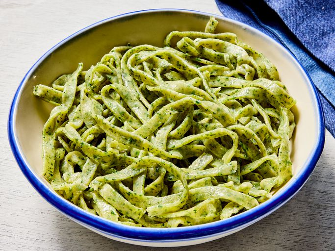

Pasta with spinach by Szymon

Description
A go-to spinach pasta recipe.
Spinach adds a beautiful color and flavor to pasta when introduced to the mix.
Getting the blend right can be tricky, but this recipe will show you how.
Ingredients
- 3 ounces spinach
- 2 large eggs
- 1 and a half teaspoons extra-virgin olive oil
- half a teaspoon kosher salt
- 2 cups all-purpose flour, or as needed
Steps
- Gather all ingredients.
- Combine water and ice in a bowl. Preheat a skillet over medium heat; add spinach.
Cook, stirring continuously, until spinach turns bright green, about 30 seconds.
- Plunge into ice water bath; remove when spinach is lukewarm. Squeeze out excess moisture with cheesecloth.
- Combine spinach, eggs, olive oil, and salt in a food processor; blend until smooth.
- Add flour; blend until dough no longer sticks to the blades, adding flour as needed.
- Roll dough into a ball; wrap in plastic wrap. Rest at room temperature for 20 minutes.
- Remove plastic wrap from dough. Transfer to a work surface generously dusted with flour; cut dough into 4 pieces with a sharp knife.
- Roll out dough with a rolling pin to 1/4-inch thickness; shape into rectangles.
- Dust pasta maker rollers with flour. Run the dough rectangles through a pasta maker on the widest setting.
Repeat rolling dough through rollers, gradually reducing the setting to desired thickness.
- Change the pasta maker's attachment to the preferred noodle shape; cut pasta with the pasta maker.
- Bring a large pot of water to a boil. Lower pasta gently into water; use a spoon to keep noodles from sticking together.
Cook until pasta is firm but soft, 3 to 6 minutes.
- Remove from the water with tongs; transfer to a bowl.
Return to main page